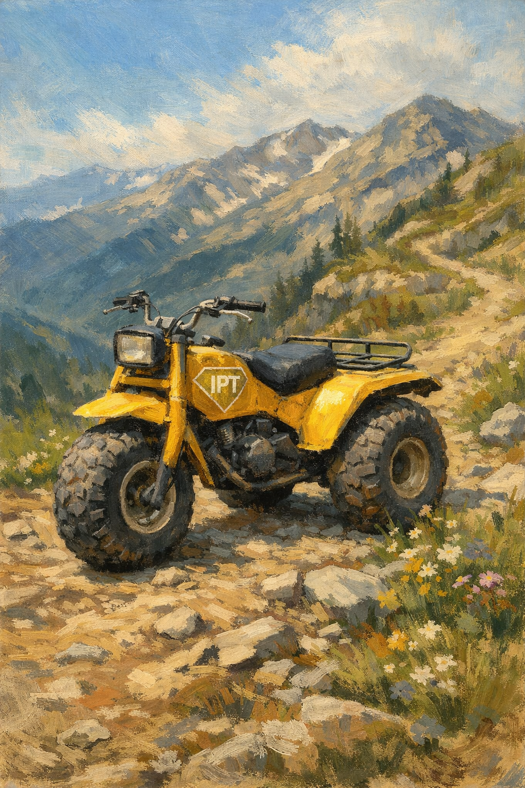

Humans gather around shared emotion.
The question is not:
“Will groups form?”
Groups always form.
The real question is:
What kind of fire is being built?
Some fires create warmth.
Some consume entire forests.
Stabilized collective identity
A campfire gathers people without requiring total psychological combustion.
People around a campfire may:
The fire exists:
for warmth, orientation, connection, and continuity.
Not conquest.
Panic-amplified collective identity
A wildfire spreads through acceleration.
Everything becomes fuel:
Wildfires consume distinction.
Individuality weakens.
Reflection decreases.
Velocity increases.
The group begins moving as:
⚡ one nervous system.
Campfires operate at:
🪵 lower velocity.
Wildfires operate at:
🔥 escalation velocity.
Campfires allow:
Wildfires punish slowing down.
Questions become suspicious.
Nuance becomes betrayal.
Reflection becomes weakness.
Campfire environments allow:
flexible roles.
A person can be:
without immediate exile.
Wildfire systems demand:
performance consistency.
You must:
Deviation risks attack.
Wildfires usually require:
constant external threat imagery.
The group stabilizes itself through:
Without threat fuel, the wildfire weakens.
Campfires do not require permanent enemies to continue existing.
Campfires can metabolize complexity.
Wildfires simplify aggressively.
Wildfire language tends toward:
This increases transmission speed.
Nuance burns slowly.
Panic spreads quickly.
Campfires regulate.
Wildfires dysregulate.
Campfire states often produce:
Wildfires produce:
Modern algorithms often reward:
🔥 wildfire conditions.
Because:
The system does not necessarily ask:
“Is this healthy?”
It often asks:
⚡ “Will this spread?”
Campfires are less dramatic.
But more sustainable.
They allow:
People can remain human-sized.
Not permanently transformed into symbols.
A healthy society may require:
many campfires and fewer wildfires.
Places where humans can:
without needing:
permanent emergency activation.
Campfires are not:
Humans will still:
The distinction is:
whether the nervous system remains capable of reflection during participation.
Wildfires create intensity quickly.
Campfires create continuity slowly.
One consumes everything nearby.
One leaves space for people to remain people.
🧰 IDENTITY PANIC TOOLKIT
🔥 Collective Dynamics Layer
🪵 Warmth without combustion
👁️ Browse freely.